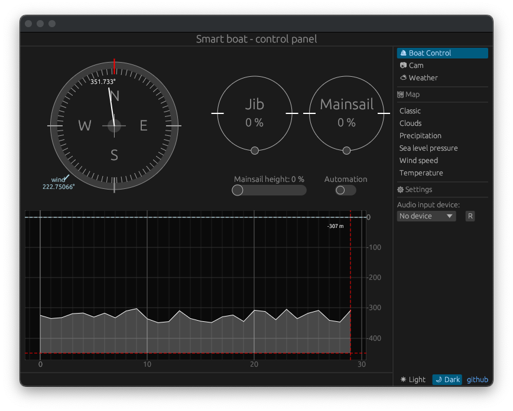

Le mouvement des voiles
Sur notre maquette nous déplacons les voiles à l'aide de poulis imprimés en 3D et de moteurs FT90MR. Allimenter 4 moteurs grâce au Raspberry Pi peut être insuffisant, c'est pourquoi nous utilisons un contrôleur PWM externe, la carte PCA9685.
Cette carte de commande fonctionne en i2c, nous pouvons associés deux avantages à cette carte. Le premier et que nous pouvons ajouté une allimentation supplémentaire ce qui évite une sollicitation trop importante du raspberry pi. De plus, nous pouvons contrôller 16 moteurs ou autre actionneur utilisant une commande PWM tout en limitant l'usage des ports GPIO.

Le contrôle des moteurs se fait également sur l'écran d'accueil. grâce aux différent slider.
Configuration du PCA9685
La seul configuration nécessaire est le prescaler via le registre 0xfe.
Il est également possible, mais optionel, de configuré le PCA dans une mode particulier. Dans notre cas nous avons décidé d'activer le mode iterratif, MODE_AI. Ce mode permet d'écrire dans plusieurs registre à la suite. Par exemple, si l'on souhaite écrire 0x00 puis 0x01 à partir du registre 0xa0, alors le PCA va comprendre qu'il faut écrire 0x00 sur 0xa0 puis 0x01 sur 0xa1.
#![allow(unused)] fn main() { pub fn init(&mut self, gpio: &mut Gpio){ gpio.i2c_set_slave_addr(PCA9685_I2C_ADDRESS); self.init_prescaler(gpio, SERVO_FREQ); } fn init_prescaler(&mut self, gpio: &mut Gpio, frequency: f32){ // Calcule le prescaler nécessaire pour atteindre la fréquence PWM souhaitée let mut prescale_value = (((FREQUENCY_OSCILLATOR / (4096.0 * frequency)) + 0.5) - 1.0) as u8; if prescale_value < PRESCALE_MIN { prescale_value = PRESCALE_MIN; } else if prescale_value > PRESCALE_MAX { prescale_value = PRESCALE_MAX; } gpio.i2c_write_byte(PCA9685_MODE1, MODE1_SLEEP); let _ = self.read_mode1(gpio); gpio.i2c_write_byte(PCA9685_PRESCALE, prescale_value); // set prescaler PWM hz to 50 (0x7a) thread::sleep(Duration::from_millis(5)); gpio.i2c_write_byte(PCA9685_MODE1, MODE1_RESTART | MODE1_AI); let _ = self.read_mode1(gpio); } }